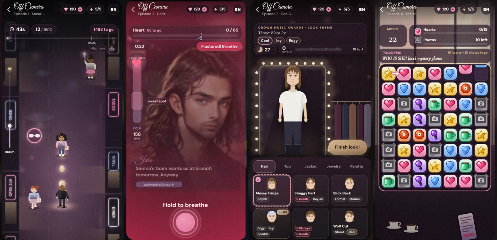
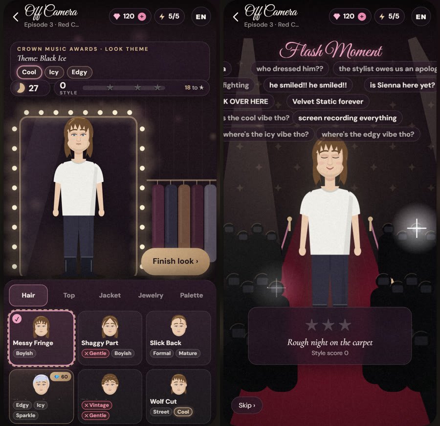
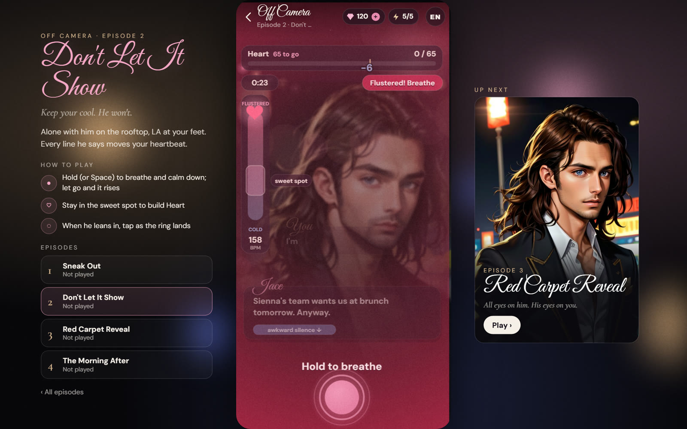

Solo · AI-assisted (Claude Code) · Design prototype · Nov 2026独立 · AI 协助开发（Claude Code）· 设计原型 · 2026 年 11 月
Off Camera
JavaScript · Canvas 2D · Story Mini-Games · Retry Economy
An original four-episode rock-star romance where each episode ends in a mini-game, and how you play picks the next scene. I built it as a game-design interview prototype for an interactive-series studio: four mini-game types (reflex, timing, decisions, puzzle), each with difficulty presets, an event funnel and an optional, fair retry economy. Playable in the browser, in English or Chinese. 一部原创的四集摇滚明星恋爱短剧：每集结尾是一个小游戏，玩得怎么样决定下一幕。这是我为一家互动短剧公司的游戏策划面试做的原型：四种小游戏类型（反应、时机、决策、解谜），每种都有难度预设、埋点漏斗和可选、公平的重试经济。浏览器里就能玩，中英文切换。
Problem问题
In most story apps a mini-game is a gate between two videos: lose and you're stuck, or you pay.
大多数剧情应用里，小游戏只是两段视频之间的关卡：输了就卡住，要么付费。
Decision决策
Make each game the scene itself. Winning and losing both lead to a fully written branch, and earlier results change later episodes.
让小游戏本身就是剧情。赢和输都通向写好的分支，前面的结果会改变后面几集。
Outcome结果
Four playable episodes on one shared kit: dialogue, tutorials, results, tuning, analytics and a mock gem-and-energy economy.
四集可玩，共用一套组件：对白、教学、结算、调参、埋点，以及模拟的钻石和体力经济。
Every episode works the same way每一集的结构相同
Scene剧情
Dialogue with one choice that changes the game that follows.
一段对白，其中一个选择会改变接下来的玩法。
Play游戏
A short mini-game; the HUD always shows time or moves left and how far you are from the goal.
一个短小游戏；界面随时显示剩余时间或步数，以及离目标还差多少。
Branch分支
Win or lose, the story continues on a different written branch. Failing never blocks the story.
赢或输，剧情都走进不同的分支。失败从不卡住剧情。

The game is the scene游戏本身就是剧情
Each mechanic was chosen for what it means in the story. Dodging fans and paparazzi is him slipping out of his own party to see you. Holding to breathe is keeping your cool on a rooftop date while his lines push your heartbeat around; a timing prompt appears when he leans in. Styling to theme tags is your first red carpet as his stylist, and the livestream chat reacts to the look. Match-3 is deciding whether the world finds out about you. Results carry forward: a viral photo in episode 1 keeps his phone buzzing in episode 2, and whether he confesses in episode 2 changes what episodes 3 and 4 start with.
每个玩法都是按它在剧情里的意义挑的。躲开粉丝和狗仔，就是他从自己的派对溜出来见你；按住呼吸，就是天台约会时保持镇定，他的台词会让心跳起伏，他靠近时会出现时机提示；按主题标签造型，是你作为造型师的第一次红毯，直播弹幕会对造型做出反应；三消是决定要不要让全世界知道你。结果会延续：第一集拍到的照片爆火，第二集他手机就响个不停；第二集他有没有告白，会改变第三、四集的开局。

Paying is convenience, never an advantage over the story付费只是方便，不能凌驾于剧情
Watching the story and taking any branch never costs energy or money. After a loss, the retry order is one free retry, then 1 energy per retry (a rewarded ad refills one), then optional gem boosters that only make the next round easier. Energy caps at 5 and refills one every 10 minutes. In episode 3, premium outfit pieces cost gems to unlock but are free to try on, and a brute-force check confirms none scores below the best free piece in its slot, so three stars stays reachable for free. In episode 4, "+5 moves" continues the same board, offered at the moment of a near miss. All purchases and ads are simulated.
看剧情、走任何分支都不花体力也不花钱。输了之后的重试顺序是：一次免费，之后每次 1 体力（看激励广告可以补 1 点），再之后才是可选的钻石道具，道具只让下一局更容易。体力上限 5，每 10 分钟恢复 1 点。第三集的付费服装要钻石解锁，但试穿免费；穷举检查确认每个付费单品都不低于同部位最好的免费单品，所以不花钱也能拿三星。第四集的「+5 步」在同一盘上继续，在差一点就赢的时候出现。所有购买和广告都是模拟的。
Built to be tuned为调参而做
Difficulty follows story position: every episode has three presets (story start, standard, late story), switchable live from the tools panel. One event funnel runs through all four episodes (intro complete → play start → play end → retry → story continue), plus key events per game, viewable in a local event log. Designer mode adds a side panel per episode with its core loop, story hook and retry rules. Art, text, parameters and both branches are separated from the core rules, so each game could become a template creators fill in.
难度跟着剧情位置走：每集都有三档预设（剧情开头、标准、剧情中后期），可以在工具面板里实时切换。四集共用一条埋点漏斗（看完开场 → 开始游戏 → 结束游戏 → 重试 → 继续剧情），每个玩法再加关键事件，可以在本地日志里查看。设计师模式会在每集旁边显示核心循环、剧情钩子和重试规则。美术、文案、参数和两条分支都和核心规则分开，每个玩法都可以变成让创作者填内容的模板。

Limits: balance was tested with scripted bots, not players; prices are placeholders.局限：数值平衡用脚本机器人测试，没有真人测试；价格是占位数值。